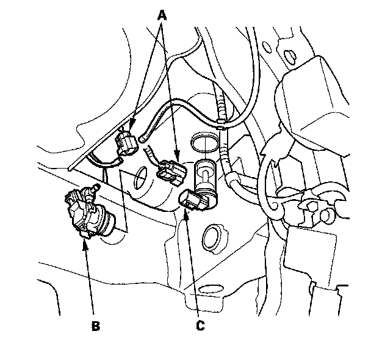
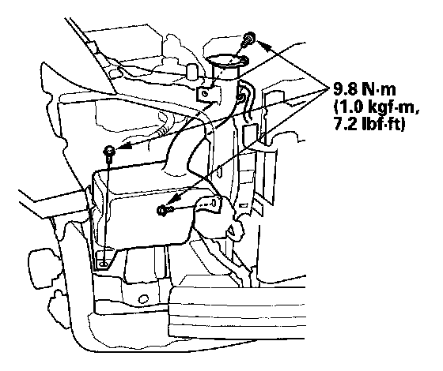

Windshield Washer Reservoir: Service and Repair
Washer Reservoir Replacement1. Remove the right inner fender.

2. Disconnect the 2P connector (A) from the washer motor(s) (B) and the washer fluid level switch (C).
3. Disconnect the washer tubes.

4. Remove the bolts and the washer reservoir.
5. Install in the reverse order of removal. Check the washer motor operation.